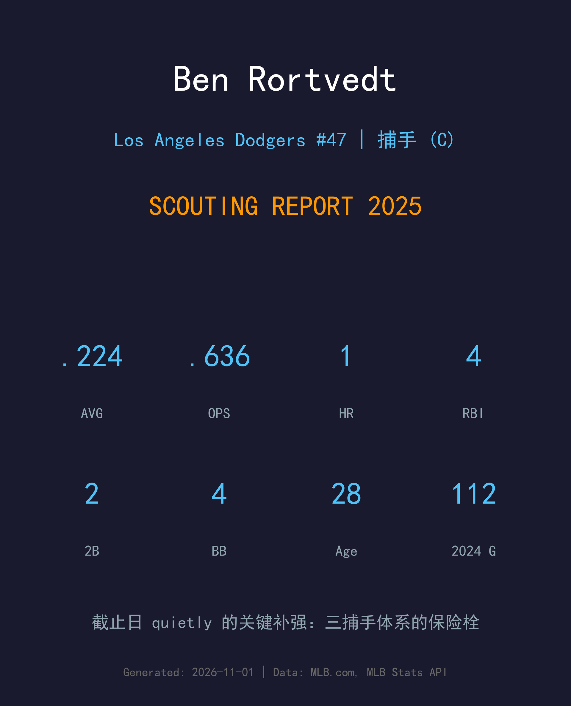
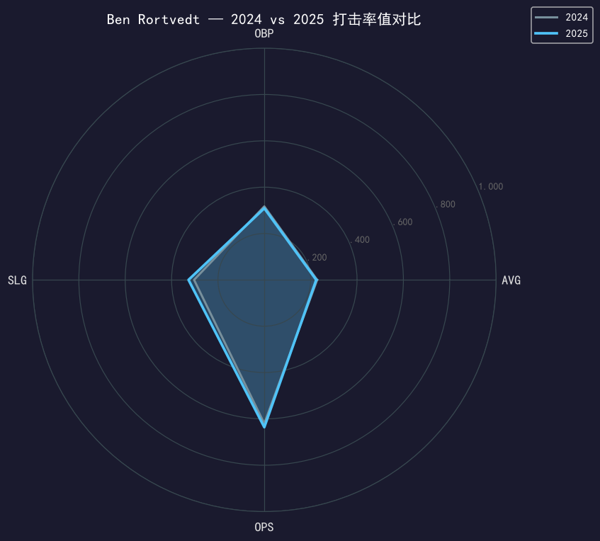
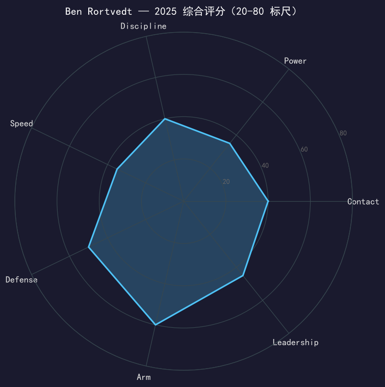

Los Angeles Dodgers #47 | 捕手 | 左打 | 三捕手体系的保险栓

⚠️ 小样本警告：本报告基于 18 场 / 58 个打席的道奇段数据。
Ben Rortvedt 是 2025 交易截止日最不起眼、却可能最被低估的补强：Barnes 五月离队、Rushing 稚嫩，道奇需要一位能蹲 112 场大联盟比赛的成熟捕手来给 Will Smith 当保险。Rortvedt 在 3A 待命一个月后于 9 月 4 日被选入名单，18 场缴出 .224/.309/.327——与他 2024 年 112 场的 .228/.317/.303 几乎完全重合：这是一位你知道能拿到什么的球员。
他的价值在蹲捕：frame、阻挡、配球的老练度是 28 岁身体里装了 34 岁的经验。九月的 18 场是标准的三捕手轮值表现，他不在季后赛计划中，但他在九月让 Smith 的膝盖得到了真正的休息。
单季 112 场出赛、328 个打席，.228/.317/.303——用他的 framing 与耐用度撑完完整赛季，这是他职业生涯的「可行性证明」。
在一笔涉及多名小联盟球员的交易中从坦帕湾来到洛杉矶；9 月 4 日合同被选入，进入三捕手轮值。

| 赛季 | G | PA | AVG | OBP | SLG | OPS | HR | RBI | BB | SO |
|---|---|---|---|---|---|---|---|---|---|---|
| 2024 | 112 | 328 | .228 | .317 | .303 | .620 | 3 | 31 | 34 | 88 |
| 2025 (道奇) | 18 | 58 | .224 | .309 | .327 | .636 | 1 | 4 | 4 | 9 |
两年数据几乎完全重叠，这本身就是最强的信号：Rortvedt 是一位均值回归极小的球员。58 个打席 9 次三振（15.5%）甚至优于他 2024 年的 26.8%，小样本下的 contact 进步值得关注。他没有惊喜，也几乎没有风险——对替补捕手而言，这就是最高的赞美。
Rortvedt 的 defense-first 标签来自 framing 与阻挡的稳定输出。在道奇的 18 场，他的工作重点是给 Smith 轮休并让年轻投手群（Knack、Casparius、Wrobleski 们）有熟悉的面孔蹲在背后。这类贡献不会出现在任何报表里，但教练组在九月让他留在名单上就是证明。
7 月 31 日交易、9 月 4 日入队、9 月的每个系列赛前教练组都要决定 Smith 哪天休——Rortvedt 就是那个让「休」成为可能的答案。十月他不在名单上，但戒指不会因此小一号。

没有惊喜也没有风险的替补捕手，价值在蹲捕与稳定
C 级 / 替补捕手（小样本警告）
道奇 2025 季后赛之路：外卡轮 2-0 红人 → NLDS 3-1 费城人 → NLCS 4-0 酿酒人 → 世界大赛 4-3 多伦多蓝鸟（二连霸）。
Ben Rortvedt 的下一站在很大程度上取决于道奇对 Rushing 的培养节奏：如果 Rushing 需要再吃一年 3A/替补的饭，Rortvedt 就是完美的过渡人选；如果道奇想加速，他也能在任何需要成熟替补捕手的球队立即上岗。28 岁的替补捕手市场很小，但他的类型永远有席位。
短期：争取续约留队或签约需要替补捕手的球队
中期：延续 defense-first 替补定位，年出赛 50-80 场
长期：退役后 coaching（尤其捕手教练）是自然路径
Ben Rortvedt 出生于威斯康星州麦迪逊，2016 年选秀入行，2021 年 4 月 30 日完成大联盟首秀。他的职业生涯是一条典型的「防守型替补捕手」轨迹：先在双城体系打磨，辗转多家球队，用 framing 与耐用度赢得每一次机会。2024 年他扛下生涯最大的 112 场工作量，2025 年 7 月 31 日，冠军队在截止日把他带进了更衣室。
他的故事没有聚光灯，但冠军队的戒指盒里永远需要这类球员的名字。